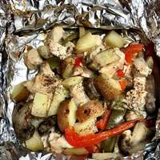

These are easy to make for camping, my husband loves them! We prepare them at home and then leave them in the cooler until we are ready to cook. You can use any combination of meat and vegetables that you like. Do not try to use less olive oil or foil or your dinner will burn. Be careful when opening foil as steam will have formed inside and can burn you.
In a large bowl, or a large zip-top bag, combine the chicken, onion, mushrooms, yellow pepper, red pepper, garlic, and potatoes. Pour in the olive oil and lemon juice, then mix well.
Evenly divide the mixture between 4 large sheets of aluminum foil. Top each with another sheet of foil, and roll up the edges tightly. Wrap each packet again, securely in another sheet of foil to double wrap.
Cook in the hot coals of a campfire until the chicken is opaque and the potatoes are tender, around 40 minutes.